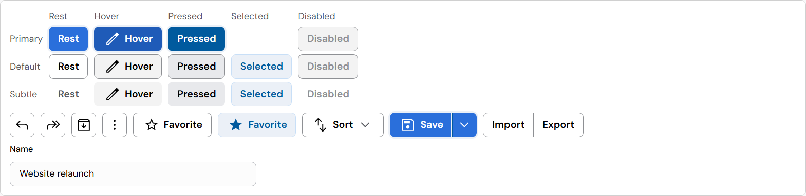
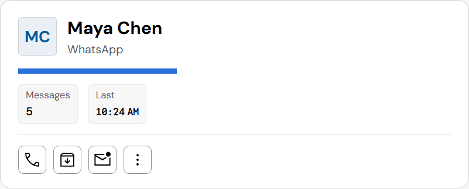
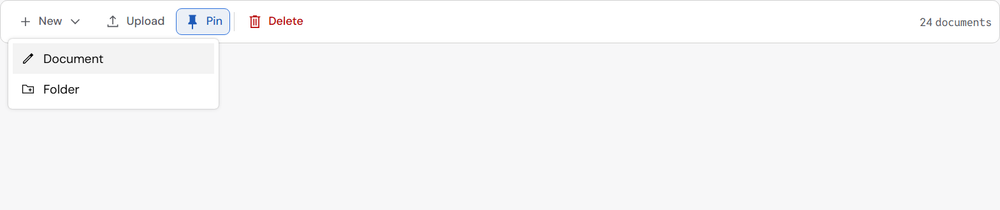
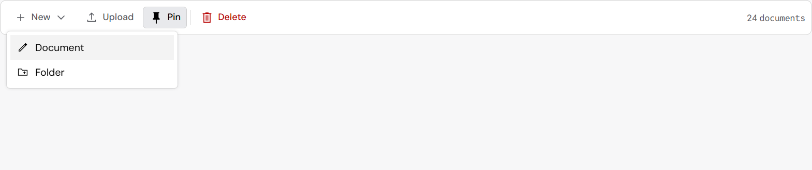

Buttons in the Fluent look: before and after
Your choice from the study (2026-10-24): the “Proposed (Fluent style)” buttons. Photographed at 150% screen scale, the same sample before and after.
What changes
- Corners are 4px on every control (buttons, fields, selects), in every density. This and the lighter border fix the corner that looked cut.
- The default button’s border is light gray (gray-300), one step darker on hover (gray-350).
- Hover and pressed fills are the same light grays at every size.
- Selected and toggled-on buttons are gray with dark text, not pale blue.
- The pale halo around primary buttons is gone.
- Disabled buttons have a faint border instead of a dark one.
- A subtle button’s icon turns blue on hover. Red commands (Delete) keep a red icon.
Buttons and a field

The Messages header

A command bar with its menu open
Only its buttons change here (Pin, now gray when on). The bar’s 4px frame, the menu items’ corners and the blue icon in menu items come in the next step, the command bar look.

